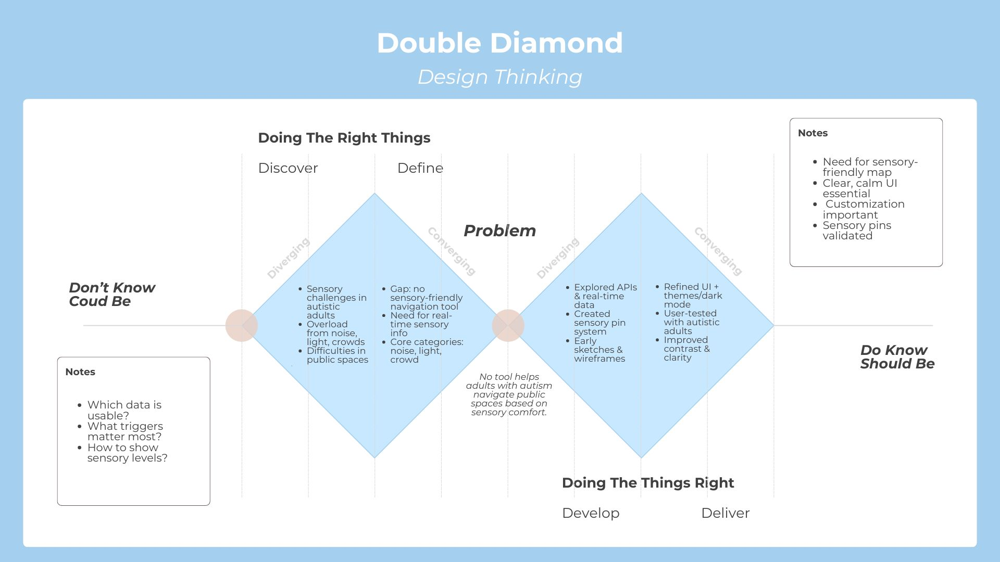
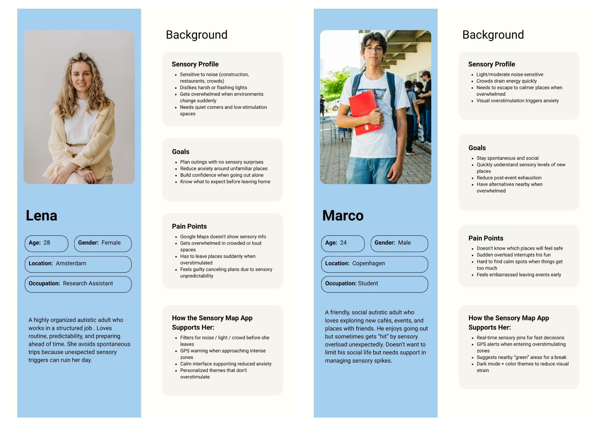
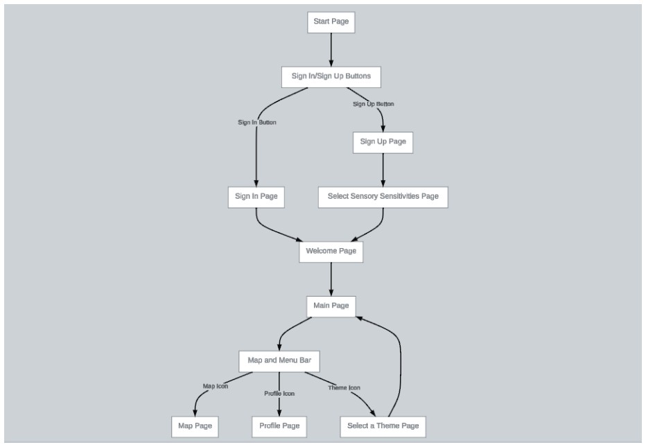
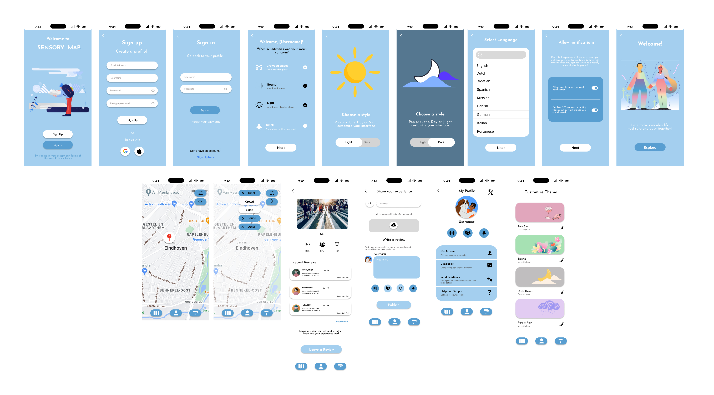
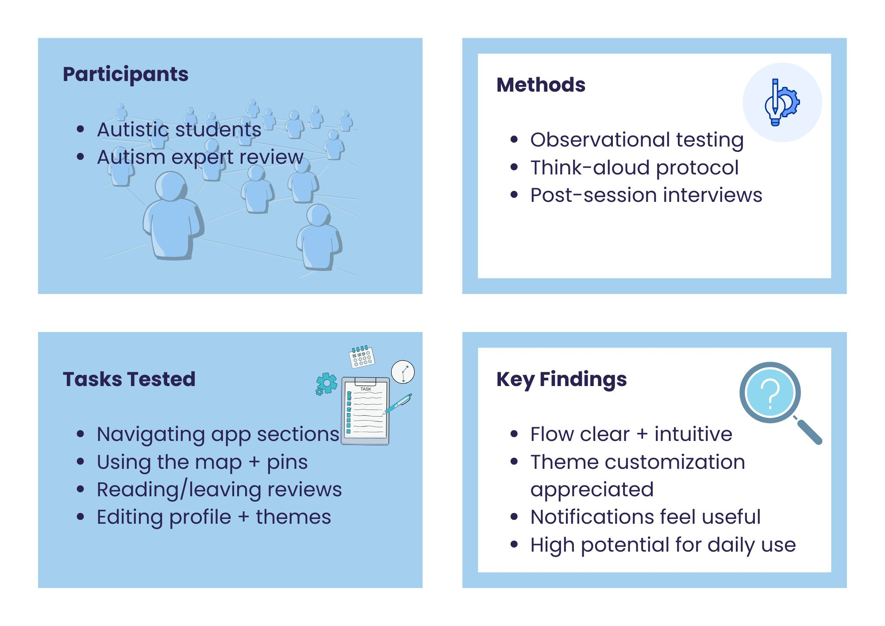

Sensory
Map App.
A mobile app concept that helps autistic and sensory-sensitive adults discover calmer, more predictable public spaces using sensory data.

Show not only where a place is, but how it might feel.
Many autistic and sensory-sensitive people experience public spaces differently because of noise, light, crowds, and unpredictability. However, most modern navigation tools focus entirely on distance and standard user ratings.
This project explores how a map application could support planning, confidence, and personal comfort through sensory filters and user-generated environmental reviews.
Starting from sensory needs, not features.
I explored the daily challenges of autistic and sensory-sensitive adults, focusing specifically on unpredictable noise, lighting, and crowded public spaces.
Core Question
What if navigation apps showed how a place might feel before you arrive?
The Design Gap
Existing tools rarely support sensory predictability, leaving a massive accessibility gap.

To ensure I was designing for predictability and control, I built personas focused on sensory needs, routines, coping strategies, and emotional states rather than generic demographics. Expert feedback reinforced the importance of customization, dark mode, GPS-based prompts, and clear sensory indicators.

Creating a calm and readable interface.
I translated the research into concrete features: color-coded sensory pins, personal sensory profiles, GPS alerts, and specific environmental filters. The user flow was intentionally kept highly predictable.

Map Pins
Show noise, light, and crowd intensity at a single glance without needing to click.
Profiles
Allow users to personalize sensitivities and define their own comfort levels.
Alerts
Proactively warn users via GPS before they enter potentially overwhelming areas.
I iterated through several visual directions before choosing a light-blue system that balanced calmness, contrast, and readability. The interface followed strict accessibility principles: clear hierarchy, simple icons with labels, minimal animation, and highly customizable themes.

Validating the concept.
I tested the prototype directly with autistic students using observation, think-aloud protocols, and post-session interviews. I also had an autism expert review the conceptual framework.
- Participants found the user flow to be clear, logical, and highly predictable.
- Theme customization (specifically dark mode) was seen as a mandatory, valuable feature.
- GPS prompts near pinned places felt supportive rather than intrusive.
- Feedback directly led to stronger UI contrast ratios across the final designs.

Inclusive design meets technical exploration.
This project helped me turn complex autism and sensory research into practical, empathetic design decisions. By exploring how Map APIs and a React prototype could support the concept, I was able to bridge the gap between UX research and frontend execution.
Ultimately, it solidified my passion for accessible, research-driven design that supports people in their everyday lives.